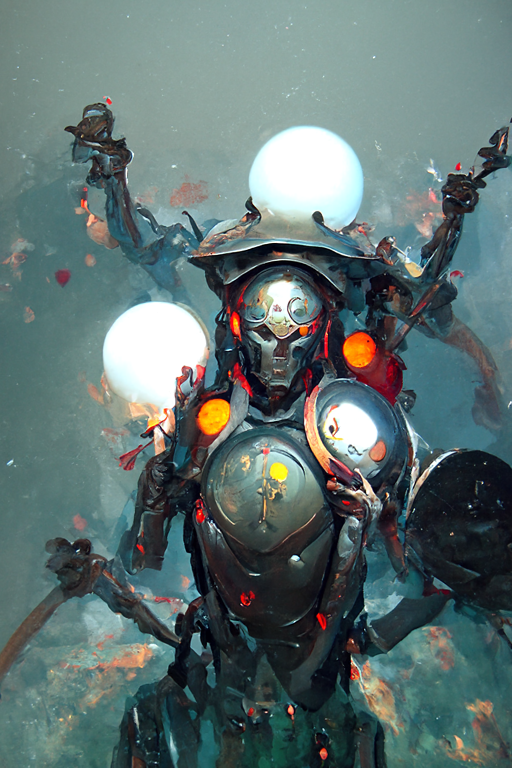
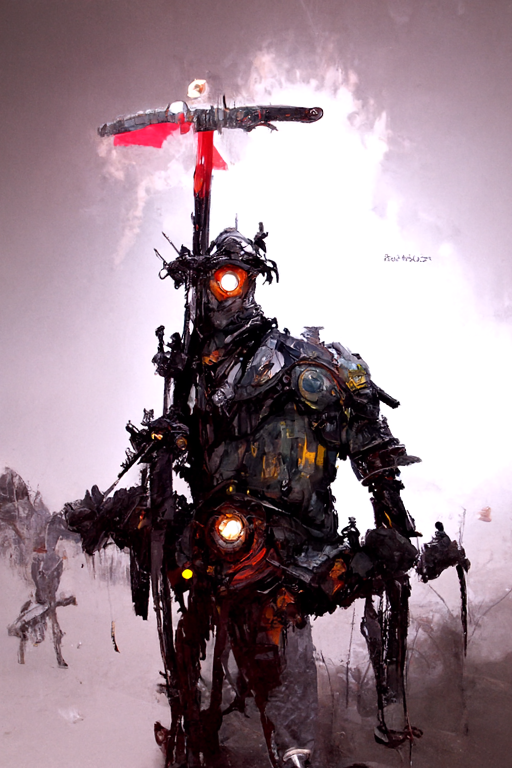
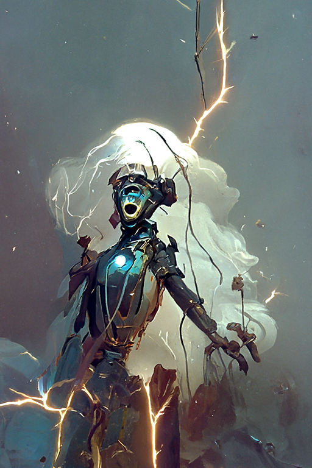
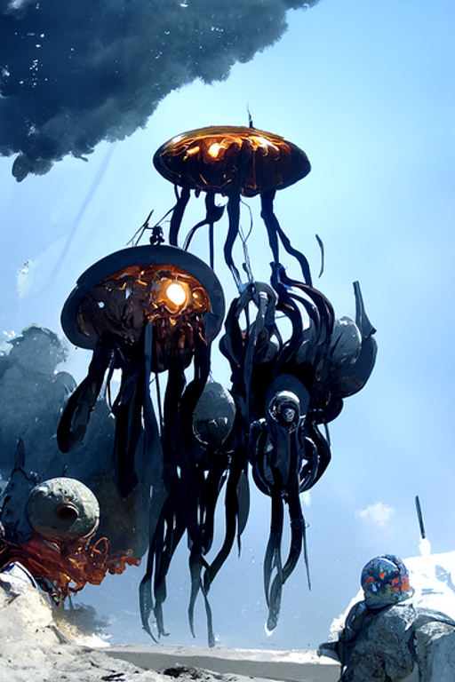
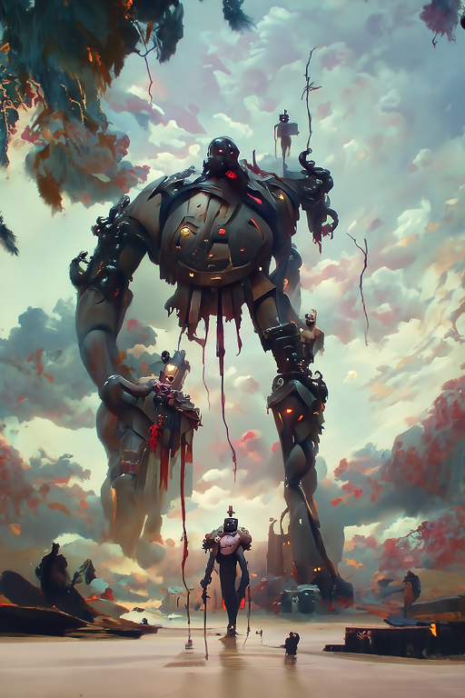
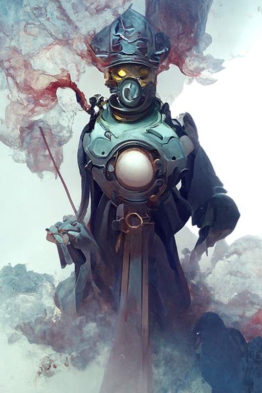

We present a tool that supports authoring game content using CLIP-guided diffusion models, specifically targeted toward collectible card games. CLIP-guided diffusion models have emerged as powerful and versatile tools for generating visual art using natural language descriptions. However, CLIP-guided models are sensitive to a wide array of choices in parameters and structure of the text prompts, making them ill-suited to rapid experimentation by developers creating 2D game art (let alone automating art generation). We discuss our learnings from experimenting with these models and present a tool that guides prompt and model choices to lower the barrier to experimenting with language-guided generation.
Our notebook exposes key parameters that strongly influence image generation.
Model settings allows a choice among CLIP models trained by OpenAI (available on their GitHub) to guide the underlying diffusion model in the generation process.
Depending on available hardware, these models can be arbitrarily combined and all have advantages and disadvantages depending on the desired outcome.
The notebook offers three presets of model combinations and manual selection options.
These choices help balance tradeoffs among visual qualities and generation requirements.
For example, ViT336 offers strong image coherence but produces the less vibrant colors and demands the most VRAM.
Batch settings specify where to save the final images and whether to save intermediate steps. They include the option to use a specific seed if the user wants to repeat an image with different settings.
Image settings influence the generated image appearance:
Generation process settings strongly influence VRAM needs and/or runtime, with modest effects on images:
Here, we show some example images that were generated with our tool and their respective prompts.
The Jester
A painting of a robot warrior with glowing eyes, holding two large shields by Jake Parker, Kemp Millard, Calum Alexander Watt and Peter Mohrbacher, featured on artstation, cyberpunk
The Bannerman
A beautiful painting of a mechanical warrior with glowing eyes and a giant sword, trending on artstation, by Jakub Rozalski and James Gunny
Electrocute!
A beautiful painting of a humanoid robot being shocked by multiple arcs of electricity, by Greg Rutkowski, Jake Parker, Kemp Millard, Calum Alexander Watt and Peter Mohrbacher, trending on artstation, concept art, matte painting, character design, cyberpunk
The Jellyfish
A swarm of floating mechanical jellyfish with glowing bodies, artstation, by Greg Rutkowski and by Chesley Bonestell, concept art
The Bannerman
A beautiful painting of dominating robot Goliath, by Jordan Grimmer, James Gourney, Kemp Millard, Peter Mohrbacher and Jason Felix, trending on conceptartworld, matte painting, concept art, horror dreamscape, dark and broody
The Putrid Streamer
"A beautiful painting of a ominous robot priest wearing a futuristic gas mask casting a spell by Thomas Kinkade, Jason Felix, Peter Mohrbacher and Viktoria Gavrilenko, trending on artstation, Ligne Claire, dramatic:10",
"cyberpunk:2",
"concept art: 2",
"matte painting:2",
"volumetric light:2"
Flower Power
A hyper-detailed watercolor painting of a humanoid war robot, featured on artstation, lovely rendition
Tribal Robots
A beautiful and detailed painting of a robot tribal warrior with glowing eyes, by Jordan Grimmer, Zdzislaw Bekinski, Viktoria Gavrilenko, James Gourney, trending on conceptartworld, matte painting, concept art, horror dreamscape, gritty
Slavic Folktale
A painting of a slavic folk tale humanoid war robot, by Ivan Bilibin, featured on artstation, HD
Gorillaz Robots
A dynamic, beautiful painting of a humanoid war robot, by Jamie Hewlett, featured on artstation, HD
Rendered Robot
A detailed render of a humanoid mecha in a vast hangar, rusty droids, worn apocalyptic light, featured on cgsocienty, octane render, unreal engine
Failure:The Tiger
"The Tiger, he destroyed his cage. Yes. Yes! The Tiger is out!:5", "In the style of Alfons Maria Mucha and Josan Gonzalez:2"
Failure: Robot Penguins
Failure: robot penguin painting, trending on artstation, ice, Greg Rutkowski, Pascal Blanché, James Gurney
In comparison, images generated with the proposed structure consistently have the desired coherence and visual quality:
Robot Penguins with the proposed structure
A painting of a robot penguin, by Greg Rutkowski, Pascal Blanché and James, Gurney, trending on artstation, ice